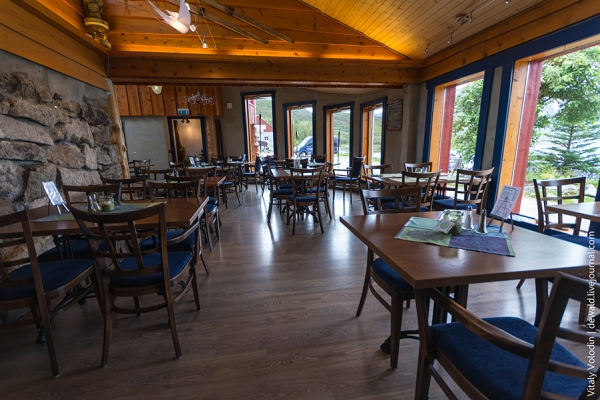
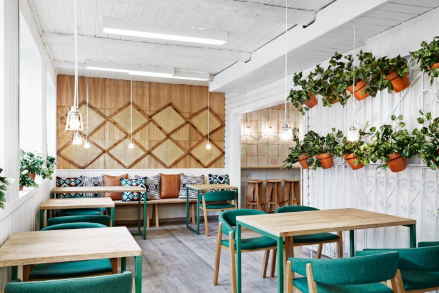
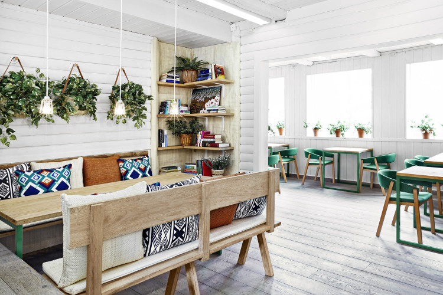

«Многие из нас по горло сыты сетевыми магазинами, которые можно найти в любом городе. В нашем проекте мы собрали маленькие, независимые места, хозяева которых обожают свое дело. Именно такие места создают культуру любого города», – говорит Ховард Шей, автор книги и интернет-портала «Мой Осло» (Mitt Oslo), посвященных альтернативным развлечениям норвежской столицы, которая сама по себе далеко не банальное туристическое направление.
«Цель нашего проекта – привлечь внимание к тем трудолюбивым энтузиастам, благодаря которым в Осло так здорово жить», – говорит Шей. В таких районах, как Гамлебюэн (Gamlebyen), Грёнланд (Grønland), Марквейен (Markveien), Турсхов (Torshov) и Торггата (Torggata) за последнее время появилось множество мест, где можно вкусно поесть в любое время суток.
Тем, кто не любит проторенных троп и хочет увидеть Осло с новой стороны, Ховард Шей рекомендует следующие уникальные места:
Адрес: Maridalsveien 188, 0469 Oslo
Этот ресторан, известный своими простыми блюдами из местных морепродуктов, жизнерадостной атмосферой и демократичными ценами, расположен в районе, популярном среди хипстеров – и не только.
Адрес: Grensen 8, 0159 Oslo
Если вы любите джаз, вам придется по душе это заведение с жизнерадостным двориком, всякий раз заполненным завсегдатаями.
Адрес: Bøgata 25C, 0655 Oslo
Популярный кафе-бар, ставший своего рода культурным центром для местных жителей. Проводятся плановые концерты и устраиваются вечеринки-сюрпризы для меломанов.
Адрес: Møllergata 12, 0179 Oslo
Маленький бразильский оазис, расположенный на шумной площади с многочисленными кафе, ресторанами и ночными барами.
Адрес: Thorvald Meyers gate 27
Этот маленький, но достойный сырный магазинчик, зажатый между популярными барами в районе Грюнерлёкка, служит прекрасным подтверждением того, что норвежский сыр – это гораздо больше, чем традиционный коричневый сыр «брюнуст».
Адрес: Maridalsveien 45b, 0175 Oslo
Эти небольшие деревянные ларьки, торгующие сосисками, – типично норвежское явление. Однако в самом Осло их осталось довольно мало.
Несмотря на явный спад в потреблении такого рода уличной еды, у красных ларьков Syverkiosken, благодаря высокому качеству, по-прежнему множество верных клиентов.
Среди них самая разношерстная публика – от бездомных до вполне себе состоятельных граждан. Ларьки славятся невероятным выбором кетчупа и горчицы, а также своим главным хитом – двойным хот-догом в белой булке.
Адрес: Markveien 34, 0554 Oslo
Небольшое кафе с высокими барными стульями в итальянском продуктовом магазине. Популярная пиццерия Villa Paradiso по соседству принадлежит тому же хозяину, Яну Вардёэну, владеющему многочисленными заведениями. Кафе расположено в непосредственной близости к главной улице района Грюнерлёкка в восточном Осло.
Адрес: Brenneriveien 9, 0182 Oslo
Концертная площадка и бар, где выступают известные исполнители международного уровня. Бар расположен в живописном месте на берегу реки Акерсэльва, разделяющей восточный и западный Осло.
Адрес: Herbernveien 1, 0286 Oslo
Этот уютный ресторан расположен на крошечном острове. В здании ресторана с 1929 года бесперебойно существует общепит. Изначально здесь находилась столовая для моряков, разгружающих и загружающих свои корабли в порту Осло.
В меню – качественные блюда из свежевыловленных морепродуктов.
Наверх